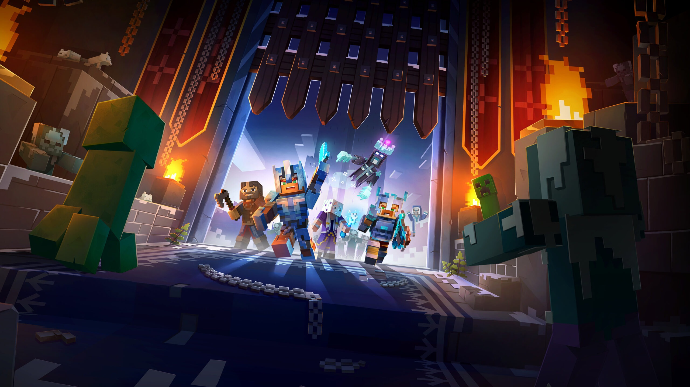

Minecraft é um jogo de construção e sobrevivência onde o jogador pode explorar um mundo aberto cheio de blocos. É possível construir casas, minerar recursos e enfrentar monstros durante a noite.

Dicas do game
Construa um abrigo antes de anoitecer. Use ferramentas para coletar recursos e explore cavernas para encontrar minérios raros.
Novidades desta versão do game
A nova versão trouxe novos biomas, criaturas e itens que ajudam na exploração e construção dentro do jogo.